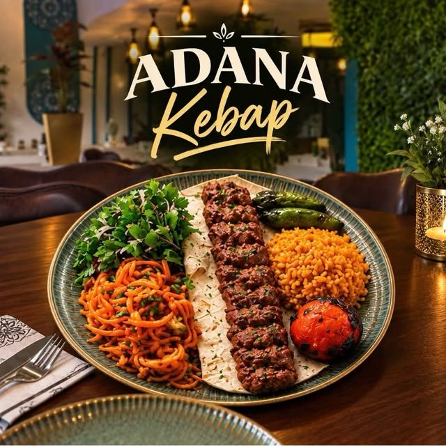
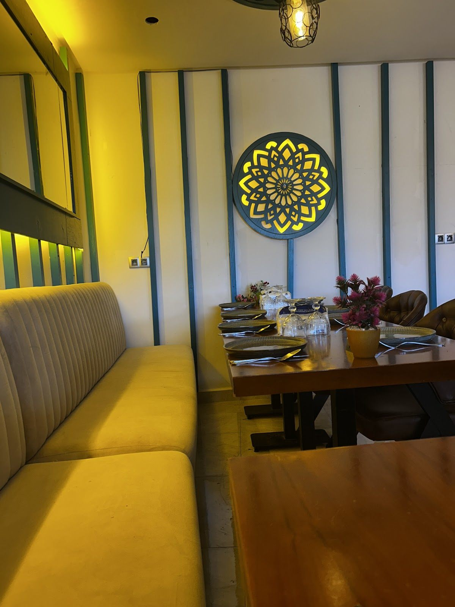
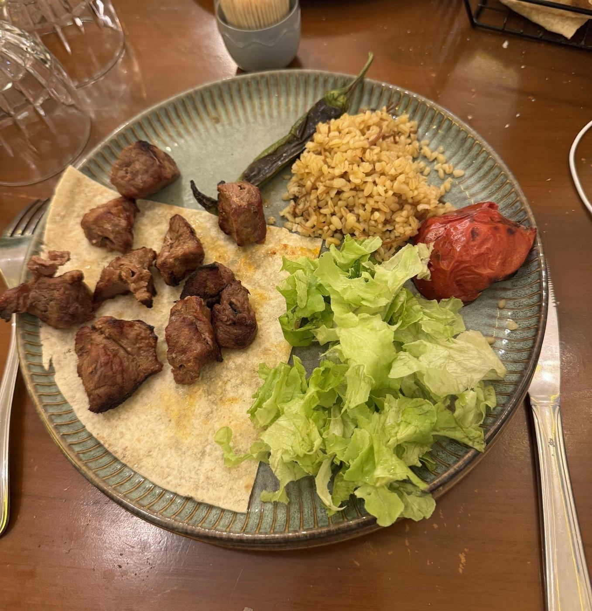

أهلا بك في عالم النكهات التركية
Chef
Seyami
Cuisine turque 100 %, viandes grillées au charbon et épices authentiques, au cœur de Nador.
Kuzu şiş
Du mangal à la table
Les kebabs sortent du charbon de bois, servis avec boulgour, salade et piments grillés.
Mezzes, douceurs et boissons
Kahve falı : lisez votre marc
En Turquie, après le café, on fait un vœu, on retourne la tasse sur la soucoupe et on attend qu’elle refroidisse. Puis on lit les formes du marc. Le nôtre vous dit quoi commander.
- Faites un vœu en silence.
- Retournez la tasse.
- Laissez le marc parler.
Pour le plaisir, évidemment.



Vert bouteille, moutarde et charbon de bois.
Afiyet olsun.
« Bon appétit », en turc. On vous attend à Nador, à deux pas du boulevard Grand Rif.
Écrire sur WhatsApp